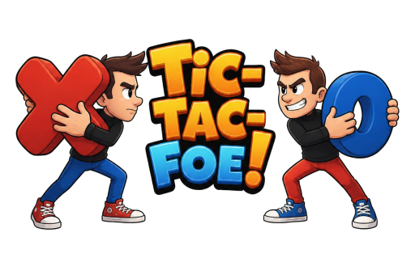
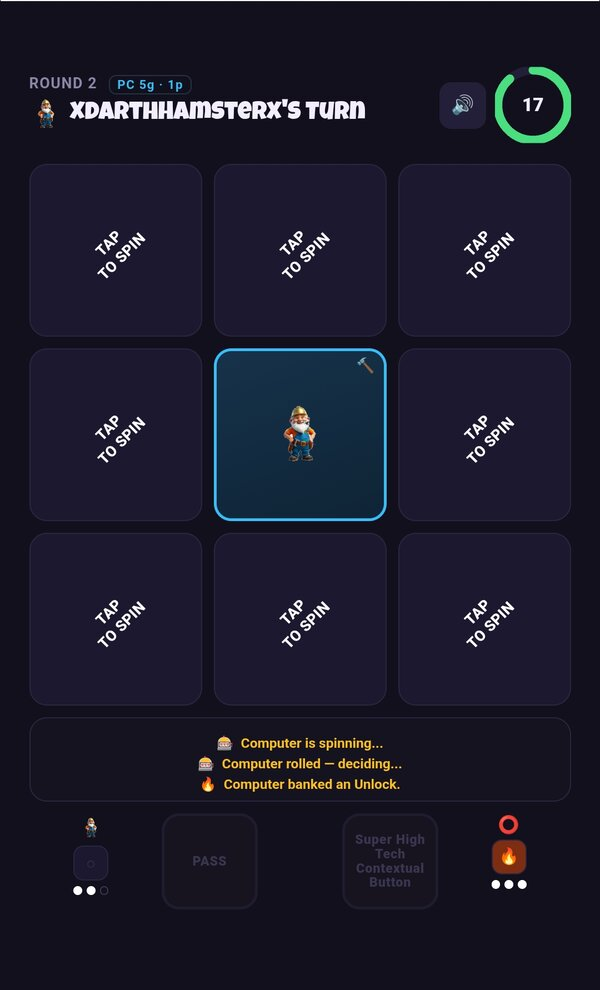
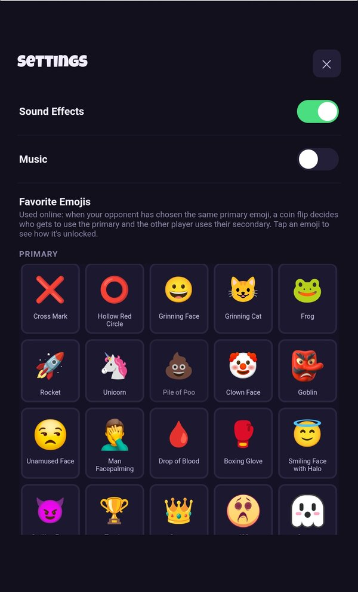

Instead of placing your mark directly, each turn you spin a column like a slot machine. Every spin can land your mark, your opponent's, or a wildcard you bank and use later — a Fire Bomb clears one of the opponent's locked squares, and the rarer Electro Reconstitution steals one outright. Spin nothing useful and you can burn a Mulligan to re-spin the column, or risk a Holy Wager on a coin flip for one more shot.
Play a quick match against the built-in computer opponent, or go head-to-head online against another player in a ranked best-of-three — complete with achievements, friends, and a leaderboard through Google Play Games.